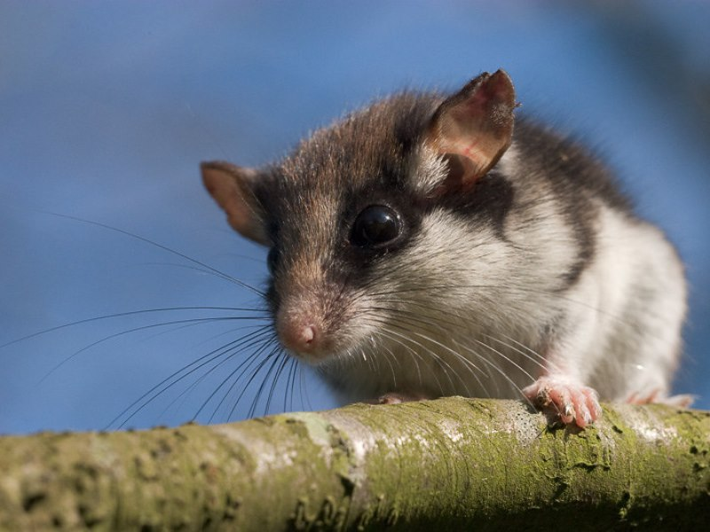
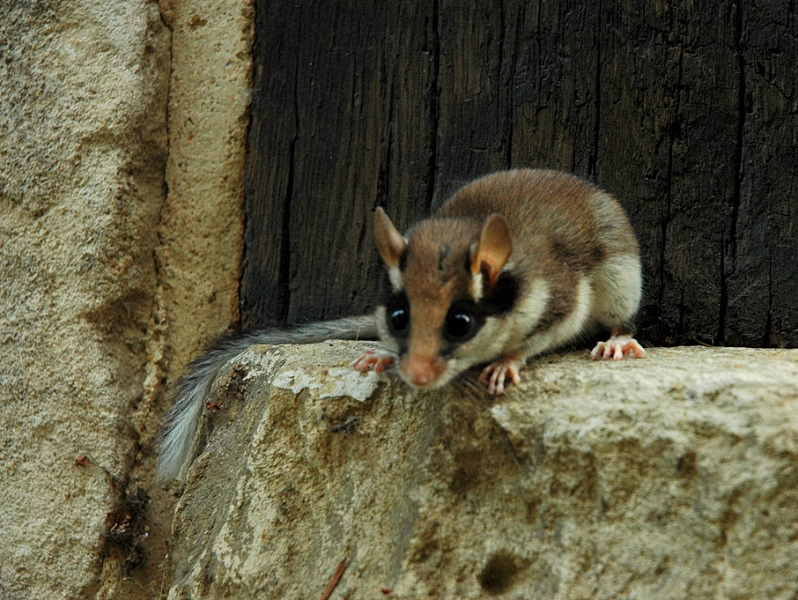

Ąžuolinė miegapelė (lot. Eliomys quercinus, angl. Garden dormouse, vok. Gartenschlafer, Eichelmaus) - miegapelinių (lot. Gliridae) šeimos graužikas. Į Lietuvos raudonąją knygą rūšis įrašyta nuo 1989 iki 2019 metų.
Kūnas 115-140 mm ilgio, svoris 65-80 g. Kūno viršus pilkšvai rudas, apačia šviesi. Uodegos gale ilgų plaukų kuokštas, kurio viršutinėje pusėje yra juoda dėmė. Užpakalinės letenos siauros ir ilgos, trečiasis ir ketvirtasis pirštai ilgesni už kitus. Ausis dengia reti trumpi plaukai. Gyvena lapuočių miškuose, soduose, parkuose. Gūžtos būna uoksuose, paukščių inkiluose, kartais įsikuria kitų žvėriukų urvuose.
Paplitusi didesnėje Europos dalyje, į Šiaurę — net iki Karelijos, į rytus — iki Uralo kalnų. Tačiau Vidurio ir Šiaurės Europoje retai aptinkama, tik pavienės radavietės žinomos ir kaimyninėse Šalyse. Lietuvoje žinoma tik viena radavietė Perlojos girininkijoje (Varėnos r.), kur 1957 — 1959 m. šios rūšies miegapelių buvo aptikta paukščiams iškeltuose inkiluose.
Ąžuolinė miegapelė mėgsta miškingas vietoves su uolėtu ar akmenuotu reljefu. Lyginant su kitų rūšių miegapelėmis, ji daugiau bėgioja žeme. Suaugusios miegapelės sėslios, turi individualias teritorijas. Aktyvios sutemus ir naktį. Minta gyvūnais (vabzdžiais ir kitais bestuburiais, taip pat smulkiaisiais žinduoliais, paukščiais), ėda ir augalinį maistą (įvairius vaisius, uogas, sėklas). Šiaurinėje arealo dalyje veda vieną vadą, kurioje dažniausiai būna 4 — 6 jaunikliai, o žiemą praleidžia miegodamos. Jų įmygis trunka apie 7 mėnesius.
1957 - 1959 m. Perlojos girininkijoje ąžuolinės miegapelės buvo keturis kartus aptiktos inkiluose su 4 — 6 jaunikliais. Tada populiacija buvo gyvybinga, nors gyveno labai nebūdingoje buveinėje: gryname pušyne, kuriame dar augo kadagių, o žemę dengė kerpės ir samanos. Praėjusiame dešimtmetyje keliose Perlojos girininkijos vietose buvo ieškoma ąžuolinių miegapelių: buvo iškelta inkilų, tačiau juos patikrinus jų nebuvo rasta.
Ąžuolinės miegapelės nyksta visoje Vidurio ir Šiaurės Europoje, nors vis dar dažnai aptinkamos Vakarų ir Pietų Europoje. Nykimo priežastys didelėje šios rūšies arealo dalyje yra neaiškios.

